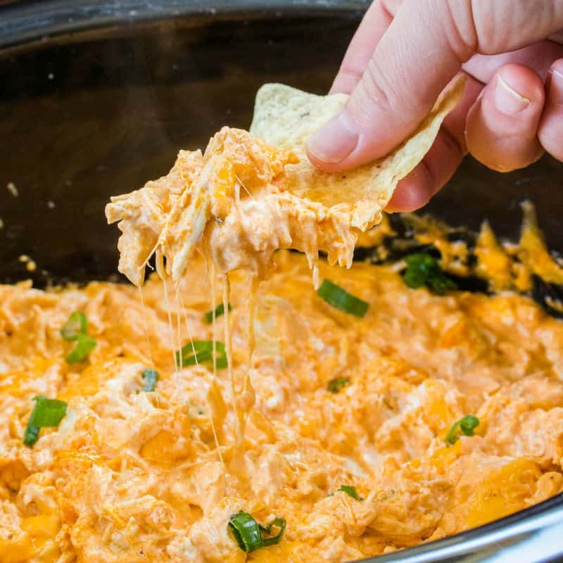

Buffalo Chicken Recipe

Buffalo Chicken Dip
Buffalo Chicken dip is a great appetizer for any event, made especially around football season, but can be had at any time.
This dish comes together quickly, and only needs a few ingredients. You can prep this the night before if you'd like as well.
Buffalo Chicken Dip Ingredients:
- 2 Cups Shredded Chicken (I use a rotisserie chicken, but you can use canned chicken found next to tuna)
- 1 Package Cream Cheese (8oz) Softened
- 1/2C Frank's Red Hot Buffalo Chicken Sauce or Regular
- 1/2C Ranch Dressing
- 1/2C Bleu Cheese Dressing
- 1 Package Shredded Cheddar
Buffalo Chicken Dip Instructions:
- Pre-heat Oven to 350 Degrees
- Set aside package of Shredded Cheddar until the end
- Mix all ingredients (except shredded cheddar) together in a medium sized bowl
- Spread ingredients into a 9x9 baking dish, if going to a party aluminum pans they sell with covers work well
- Spread cheese on top
- Place baking dish into oven for 20 minutes or until cheese is bubbling
- Eat!!!
Homepage | Dog Food